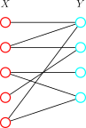
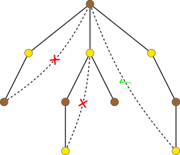

OI Wiki · prijevod · Teorija grafovaOI Wiki · translation · Graph theory
Bipartitni grafoviBipartite graphs
Sadržaj
Uvod
Bipartitni graf (bipartite graph), zvan i dvodijelni graf, vrsta je grafa posebne strukture. Njegov se skup vrhova može podijeliti na dva disjunktna podskupa tako da svaki brid grafa spaja par vrhova iz različitih skupova, a nikad dva vrha iz istog skupa.
Zahvaljujući toj jednostavnoj strukturi, bipartitni grafovi ne samo da imaju mnoga elegantna svojstva, nego se i široko koriste za modeliranje stvarnih situacija, npr. raspodjele zadataka, sustava preporuka, tržišta uparivanja i sl. Mnogi optimizacijski problemi koji su teški na općim grafovima na bipartitnim se grafovima mogu riješiti učinkovito i točno.
Definicija
Ako se skup vrhova \(V\) grafa \(G=(V,E)\) može podijeliti na dva disjunktna podskupa \(X\) i \(Y\) tako da krajevi svakog brida \(e\in E\) pripadaju jedan skupu \(X\), a drugi skupu \(Y\), graf \(G\) zovemo bipartitnim grafom (bipartite graph). Skupovi \(X\) i \(Y\) često se zovu njegova dva dijela (part), odnosno lijeva i desna strana bipartitnog grafa. Kad su dijelovi \(X\) i \(Y\) poznati, bipartitni graf \(G\) možemo zapisati i kao trojku \((X, Y, E)\).
Tipičan bipartitni graf prikazan je na slici.

Stabla, parni ciklusi, mrežasti grafovi i sl. uobičajeni su primjeri bipartitnih grafova.
Karakterizacija
Bipartitni grafovi mogu se ekvivalentno definirati i sljedećim svojstvima:
- Graf \(G\) može se obojiti dvjema bojama. Drugim riječima, svi se vrhovi grafa mogu obojiti s najviše dvije boje tako da susjedni vrhovi imaju različite boje.
- Graf \(G\) ne sadrži ciklus neparne duljine.
Očito je da je prvo svojstvo ekvivalentno definiciji bipartitnog grafa: dovoljno je svaki od dvaju dijelova obojiti jednom bojom.
Drugo je svojstvo nešto složenije. Pokušajmo graf \(G\) obojiti dvjema bojama. Budući da se bojanja različitih komponenata povezanosti međusobno ne ometaju, dovoljno je promatrati komponente jednu po jednu. Odaberimo bilo koji vrh \(s\) u komponenti, pokrenimo DFS i za svaki vrh \(v\) komponente zabilježimo udaljenost (tj. dubinu) od \(s\) u DFS stablu. Indukcijom po DFS stablu, počevši od \(s\), vidimo da, ako postoji valjano bojanje, ono nužno boji svaki vrh \(v\) jednom od dviju boja ovisno o parnosti njegove udaljenosti do polaznog vrha \(s\).

Zatim promotrimo bridove koji nisu u stablu. Ako svaki od tih nestablastih bridova ima krajeve različitih boja, trenutno je bojanje valjano; u suprotnom valjano bojanje ne postoji. Nadalje, dva vrha imaju različite boje ako i samo ako su njihove udaljenosti do korijena \(s\) različite parnosti, a to je ekvivalentno tome da dodavanje tog nestablastog brida tvori paran, a ne neparan ciklus. Dakle, dok god nema neparnih ciklusa, nestablasti bridovi nužno spajaju vrhove različitih boja, pa se cijeli graf može obojiti dvjema bojama i graf je sigurno bipartitan.
Provjera
Da bismo provjerili je li graf bipartitan, dovoljno je iskoristiti gornju ekvivalentnu karakterizaciju i pokušati graf obojiti. Za to se graf može obići DFS-om ili BFS-om. Ako nađemo neparan ciklus, tj. situaciju u kojoj bojanje nije moguće, graf nije bipartitan; inače jest.
Konkretan postupak:
- Prolazimo po vrhovima; ako naiđemo na još neobojen vrh, našli smo novu komponentu povezanosti.
- Taj vrh obojimo bilo kojom bojom i iz njega pokrenemo DFS ili BFS, pokušavajući obojiti tu komponentu.
- Pri obilasku susjednih vrhova, ako naiđemo na već obojen vrh, provjerimo je li njegova boja jednaka boji trenutnog vrha. Ako jest, graf nije bipartitan i odmah završavamo; inače nastavljamo obilazak.
- Ako naiđemo na još neobojen vrh, obojimo ga bojom suprotnom od boje trenutnog vrha.
Referentni kôd:
Referentni kôd
int n;
std::vector<std::vector<int>> gr;
std::vector<int> colors, vis;
// Depth-first search to color vertices.
bool dfs(int cr) {
vis[cr] = true;
for (int nt : gr[cr]) {
if (vis[nt]) {
if (colors[cr] == colors[nt]) return false;
} else {
colors[nt] = colors[cr] ^ 1;
if (!dfs(nt)) return false;
}
}
return true;
}
// Check whether the graph GR is bipartite.
// If so, the vector COLORS will store a feasible coloring.
bool check_bipartite() {
for (int i = 1; i <= n; ++i) {
// Check connected components one by one.
if (!vis[i]) {
colors[i] = 0;
if (!dfs(i)) return false;
}
}
return true;
}
Vremenska složenost je \(O(|V|+|E|)\).
Primjene
Zbog jednostavne strukture mnogi se optimizacijski problemi teorije grafova na bipartitnim grafovima mogu učinkovito riješiti. Pojedinosti potraži u odgovarajućim glavnim člancima.
- maksimalna klika (trivijalno)
- minimalno bojanje vrhova (trivijalno)
- minimalno bojanje bridova
- maksimalno sparivanje
- minimalni bridni pokrivač
- minimalni vršni pokrivač
- maksimalni nezavisni skup
- maksimalno težinsko sparivanje
- igre na bipartitnim grafovima
Introduction
A bipartite graph, also called a two-part graph, is a class of graphs with a special structure. Its vertex set can be partitioned into two disjoint subsets such that every edge of the graph connects a pair of vertices from different sets and never two vertices inside the same set.
Thanks to this simple structure, bipartite graphs not only exhibit many elegant properties but are also widely used to model real-world situations such as task assignment, recommendation systems, and matching markets. Many optimization problems that are hard on general graphs can be solved efficiently and exactly on bipartite graphs.
Definition
If the vertex set \(V\) of a graph \(G=(V,E)\) can be split into two disjoint subsets \(X\) and \(Y\) such that the two endpoints of every edge \(e\in E\) belong to \(X\) and \(Y\) respectively, the graph \(G\) is called a bipartite graph. The sets \(X\) and \(Y\) are often called its two parts, or the left and right part of the bipartite graph. When the two parts \(X\) and \(Y\) are known, the bipartite graph \(G\) can also be written as the triple \((X, Y, E)\).
A typical bipartite graph is shown below.
Trees, even cycles, grid graphs, etc. are common examples of bipartite graphs.
Characterization
Bipartite graphs can equivalently be defined by the following properties:
- The graph \(G\) is 2-colorable. That is, all vertices of the graph can be colored with at most two colors so that adjacent vertices have different colors.
- The graph \(G\) contains no cycle of odd length.
Clearly the first property is equivalent to the definition of a bipartite graph: just color each of the two parts with one color.
The second property is slightly more involved. Try to color the graph \(G\) with two colors. Since the colorings of different connected components do not interfere with each other, it suffices to consider the components one by one. Pick any vertex \(s\) in a component, run a DFS, and record for every vertex \(v\) of the component its distance (i.e. depth) from \(s\) in the DFS tree. By induction on the DFS tree starting from \(s\), if a valid coloring exists, it must color each vertex \(v\) with one of the two colors according to the parity of its distance to the starting vertex \(s\).
Next consider the edges that are not in the spanning tree. If the two endpoints of every such non-tree edge have different colors, the current coloring is valid; otherwise no valid coloring exists. Furthermore, two vertices have different colors if and only if their distances to the root \(s\) have different parity, which is equivalent to the cycle formed by adding that non-tree edge being even rather than odd. Hence, as long as there is no odd cycle, the non-tree edges necessarily connect vertices of different colors, so the whole graph can be colored with two colors and the graph is certainly bipartite.
Testing
To test whether a graph is bipartite, simply use the equivalent characterization above and try to color the graph. To do so, traverse the graph with DFS or BFS. If an odd cycle is found, i.e. a situation where coloring is impossible, the graph is not bipartite; otherwise it is.
The concrete procedure is as follows:
- Iterate over the vertices; when an uncolored vertex is found, a new connected component has been discovered.
- Color that vertex with any color and run DFS or BFS from it, trying to color that connected component.
- When visiting adjacent vertices, if an already colored vertex is found, check whether its color equals the color of the current vertex. If it does, the graph is not bipartite and we return immediately; otherwise continue the traversal.
- If an uncolored vertex is found, color it with the color opposite to that of the current vertex.
Reference code:
Reference code
int n;
std::vector<std::vector<int>> gr;
std::vector<int> colors, vis;
// Depth-first search to color vertices.
bool dfs(int cr) {
vis[cr] = true;
for (int nt : gr[cr]) {
if (vis[nt]) {
if (colors[cr] == colors[nt]) return false;
} else {
colors[nt] = colors[cr] ^ 1;
if (!dfs(nt)) return false;
}
}
return true;
}
// Check whether the graph GR is bipartite.
// If so, the vector COLORS will store a feasible coloring.
bool check_bipartite() {
for (int i = 1; i <= n; ++i) {
// Check connected components one by one.
if (!vis[i]) {
colors[i] = 0;
if (!dfs(i)) return false;
}
}
return true;
}
The time complexity is \(O(|V|+|E|)\).
Applications
Because of their simple structure, many graph optimization problems can be solved efficiently on bipartite graphs. See the corresponding main articles for details.
- maximum clique (trivial)
- minimum vertex coloring (trivial)
- minimum edge coloring
- maximum matching
- minimum edge cover
- minimum vertex cover
- maximum independent set
- maximum weight matching
- bipartite graph games